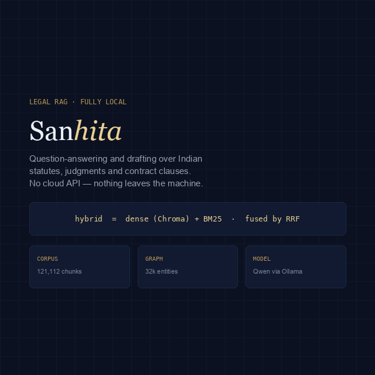

Legal Tech · Retrieval · Fully Local
Sanhita
संहिता — a code or compilation of texts, as in the Bharatiya Nyaya Sanhita. The name describes what it indexes: Indian statutes, judgments and contract clauses, made searchable, connected, and answerable with the evidence shown. No cloud API, no API key, nothing leaves the machine.

The Problem
Legal work
cannot leave the room.
Most legal AI tools ask you to upload privileged material to someone else's server. That is a hard stop for a lot of real practice, and it is an unnecessary one — a corpus of Indian statutes, judgments and contract clauses is large but not unmanageable, and a 3B model is enough to read retrieved passages and answer over them. Sanhita is built on that premise: the entire pipeline, from extraction through embedding to generation, runs on the machine in front of you.
The Architecture
Dense and lexical,
fused.
Extract — Apache Tika
One extraction path for PDF, DOCX, XLSX, PPTX, CSV and HTML, so the corpus can be whatever the source happens to be rather than whatever the parser prefers.
Retrieve — hybrid, fused by RRF
Chroma dense vectors (nomic-embed-text, 768-dim) and BM25 lexical search run side by side and are combined with reciprocal rank fusion. Legal queries need both: embeddings catch paraphrase, BM25 catches the exact section number a statute turns on.
Connect — a 32k-entity graph
A NetworkX knowledge graph of roughly 32,000 legal entities and 39,000 relations links statutes, judgments and clauses, so a result can be followed outward rather than read in isolation.
Answer — Qwen 2.5 via Ollama
Generation is local. Answers are returned with the retrieved passages that produced them, and drafts export to PDF or DOCX.
Engineering
121,112 chunks,
resumably.
Embedding the full corpus takes about an hour on an Apple M2 —
long enough that a crash halfway through has to be survivable,
so indexing is checkpointed and resumable: interrupt it and
run make setup again. For a usable system in ten
minutes instead, make setup-fast indexes the Q&A
datasets and judgments first and leaves the contract clauses
for a later pass.
The whole thing comes up with one command behind Docker, with Ollama on the host supplying both the generation and the embedding models.